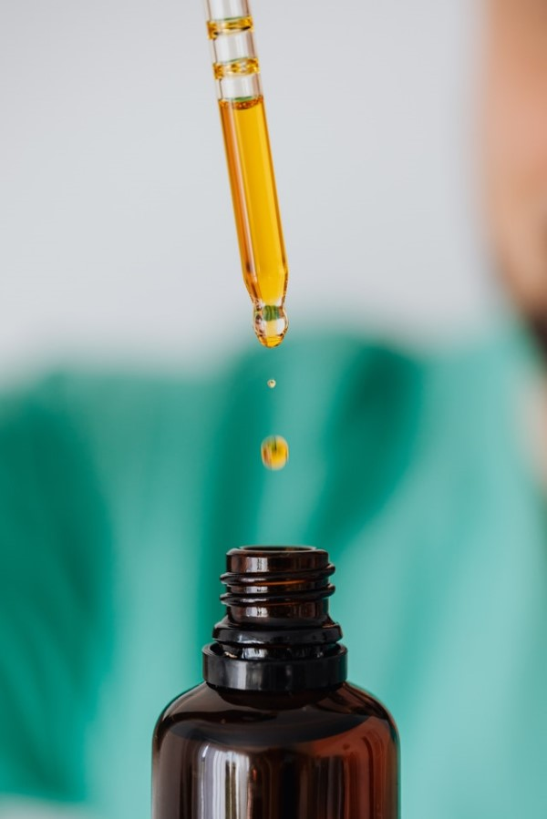

Amanda Pons
Research Technician 2
Research technician currently working in the substance abuse field on federally contracted studies. Experienced in private sector, government, and academic research. Skills include lab management, immunobiology lab benchwork, web development, and holistic knowledge of lab animal studies and colony management. Proficient at lab management, supply procurement, and other administrative duties. Interested in epidemiological public health research with a focus on substance abuse.
Featured Projects
Published and ongoing research by current lab
My current lab is doing a variety of research on the effects of nicotine use. Ongoing research by our lab uses modified e-cigarette devices to mimic vaping in humans.
Example of recent researchWork Experience
Animal Research Technician 2
Research Triangle International, Durham, NC
September 2019 - Present
Managed federally-contracted animal research studies focusing on substances of interest including synthetic cannabinoids, THC, nicotine, morphine and methamphetamine. Performed drug discrimination, plethysomography, tetrad, self-administration, and other physiological and behavioral studies with multiple hardware and software systems daily. Provided excellent teamwork and cross-trained on all studies with other technicians and manager. Maintained lab through providing common study reagents, following federal guidelines on controlled substance use, and weekly upkeep.
Research Technician, Durham, NC
Shattuck Labs, Durham, NC
September 2018 - September 2019
Established vivarium in new facility and maintained daily according to AAALAC standards. Interfaced with vet consultant and researchers to provide exceptional care to mouse colony. Supported pre-clinical research through preparing cohort animals, tumor inoculation, measuring symptoms, and assisting researchers recording data. Worked at bench to support pre-clinical research and presented in vitro data at weekly meetings. Maintained lab through stocking, autoclaving, and daily maintenance.
Research Technician and Animal Technician
University of North Carolina at Chapel Hill, Chapel Hill, NC
October 2016 - September 2018
Maintained mouse colony and assisted with surgery on humanized immunodeficient mice. Oversaw ordering, shipping, receiving, equipment care, and safety compliance for lab. Served as point of contact for companies, university departments, and regulatory bodies for lab. Kept extensive logs of care and duties to comply with national AAALAC standards. Provided outstanding daily animal care and husbandry to mice and rats within UNC facilities.
Education
North Carolina State University, Raleigh, NC, USA
B.Sc. of Microbiology, August 2012 - May 2016
Graduated cum laude with B.Sc. in Microbiology and Minor in Upstream Biomanufacturing.
Worked as an undergraduate researcher, Principles of Genetics teaching assistant, and Women's Center volunteer.
Wake Technical Community College, Raleigh, NC, USA
Web Development Basics Certificate, January 2019 - Present
Earning certificate course in web development and design with coursework in HTML, CSS, JavaScript, and PHP.